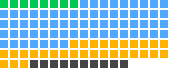

Security agent skills
Skills for security review, vulnerability hunting, threat detection, authentication hardening and secure configuration. They give an agent a methodical checklist for the parts of a codebase or system where mistakes cost the most.
- 115 listed skills
- 22 repositories
- 22 with full pages

Every dot is a listed security skill, sorted by score.ABCD
Highest-scoring security skills in the October 22, 2026 snapshot: codeql from trailofbits/skills (92/100), assuredworkloads-environment-assessor from google/skills (90/100) and skill-scanner from getsentry/skills (88/100). Scores come from the Suede Skill Check.
Build a shortlist for your task →
All 115 security skills
No matching skills. Try fewer words or clear your search.
| Skill | Repository | What it does |
|---|---|---|
| agentic-actions-auditor 89/100 · B | trailofbits/skills | Audits GitHub Actions workflows for security vulnerabilities where attacker-controlled input reaches AI agents like Claude Code Action, Gemini CLI, or Codex in CI/CD. |
| aig-scanner 82/100 · B | Tencent/AI-Infra-Guard | Runs AI security scans of infrastructure, AI tools and skills, and AI agents, and evaluates LLM jailbreak resistance with Tencent's AI-Infra-Guard. |
| assuredworkloads-environment-assessor 90/100 · A | google/skills | Discovers Google Cloud resource telemetry and effective Org Policies, evaluates workloads against sovereign data boundary and compliance standards, and recommends the Assured Workloads Framework. |
| audit-augmentation 85/100 · B | trailofbits/skills | Augments Trailmark code graphs with audit findings from SARIF results, weAudit annotations, and binary-analysis exports, mapping findings to graph nodes by file and line. |
| codeql 92/100 · A | trailofbits/skills | Scans a codebase for security vulnerabilities using CodeQL's interprocedural data flow and taint tracking analysis, with run-all and important-only scan modes. |
| crypto-protocol-diagram 87/100 · B | trailofbits/skills | Extracts protocol message flow from source code, RFCs, papers, pseudocode, or ProVerif and Tamarin models and generates Mermaid sequence diagrams with cryptographic annotations. |
| django-access-review 86/100 · B | getsentry/skills | Reviews Django views, DRF viewsets, and ORM queries for access control, authorization, IDOR, tenant isolation, and broken access problems. |
| firebase-security-rules-auditor 78/100 · C | firebase/skills | Audits Firebase Firestore and Cloud Storage security rules for vulnerabilities including privilege escalation, role bypasses, and resource exhaustion. |
| gha-security-review 86/100 · B | getsentry/skills | Reviews GitHub Actions workflows for exploitation vulnerabilities such as pwn requests, expression injection, credential theft, and supply chain attacks, with concrete proof-of-concept scenarios. |
| graph-evolution 89/100 · B | trailofbits/skills | Compares Trailmark code graphs at two source snapshots to surface security-relevant structural changes, including new attack paths, complexity shifts, and blast radius growth. |
| iam-helper-for-privileged-access-management 89/100 · B | google/skills | Manages the lifecycle of on-demand temporary access with Privileged Access Manager, including entitlements, access requests, and approving or denying pending grants. |
| oauth 80/100 · B | mcollina/skills | Implements OAuth 2.0 and 2.1 authorization flows in Fastify applications, including PKCE, client credentials, device flow, refresh token rotation, and JWT validation. |
| redis-security 75/100 · C | redis/agent-skills | Guides Redis security, covering authentication with requirepass and ACL users, TLS, least-privilege access control, network exposure limits, and disabling dangerous commands. |
| secret-serialization 86/100 · B | getsentry/skills | Finds secrets, tokens, passwords, and API keys that can leak through generated serialization, structured logs, tracing spans, and error reports in Python and JavaScript. |
| secrets-rotation 82/100 · B | avelikiy/great_cto | Handles exposed secrets, such as ones pasted into chat or committed, by treating them as compromised and making revocation and rotation one tracked task. |
| security-audit 72/100 · C | cloudflare/security-audit-skill | Provides security guidance and vulnerability review for codebases, APIs, services, CLI tools, libraries, and daemons, including focused reviews, vulnerability research, audits, and pen tests. |
| security-review 86/100 · B | getsentry/skills | Reviews code for security vulnerabilities including injection, XSS, authentication, authorization, and cryptography issues, using a systematic process with confidence-based reporting. |
| semgrep 92/100 · A | trailofbits/skills | Runs a Semgrep security scan over a codebase, detecting languages, selecting rulesets, requiring approval of the plan, and merging output to SARIF. |
| skill-scanner 88/100 · B | getsentry/skills | Scans agent skills for prompt injection, malicious scripts, excessive permissions, secret exposure, and supply chain risks before installation. |
| trailmark-finding-triage 91/100 · A | trailofbits/skills | Performs graph-assisted triage of a single security finding, SARIF result, or suspicious function using Trailmark reachability, taint, privilege-boundary, and blast-radius evidence. |
| varlock 75/100 · C | wrsmith108/varlock-claude-skill | Manages environment variables and secrets with Varlock so secrets are never exposed in terminals, logs, traces, or Claude's context. |
| yara-rule-authoring 86/100 · B | trailofbits/skills | Guides authoring of YARA-X detection rules for malware identification, covering naming conventions, string selection, performance optimization, migration from legacy YARA, and false positive reduction. |
| agent-owasp-compliance 80/100 · B | github/awesome-copilot | Check any AI agent codebase against the OWASP Agentic Security Initiative (ASI) Top 10 risks. Use this skill when: - Evaluating an agent system's… |
| algorand-vulnerability-scanner 84/100 · B | trailofbits/skills | Scans Algorand smart contracts for 11 common vulnerabilities including rekeying attacks, unchecked transaction fees, missing field validations, and… |
| api-compliance-checker 71/100 · C | LambdaTest/agent-skills | Designs GDPR-compliant API patterns, PCI-DSS field handling, SOC2 audit log schemas, HIPAA data endpoints, and regulatory compliance checklists for… |
| api-security-auth-pattern 71/100 · C | LambdaTest/agent-skills | Designs and documents authentication, authorization, and security patterns for any API. Use whenever the user asks about OAuth 2.0, JWT, API keys… |
| audit-context-building 86/100 · B | trailofbits/skills | Understand a codebase before looking for bugs in it - what each function assumes, what it guarantees, and what it depends on elsewhere. Use when… |
| audit-integrity 77/100 · C | github/awesome-copilot | Enforce output quality, evidence verification, and quality gates across security audits. Use this skill when you perform SAST, SCA, threat modeling… |
| audit-prep-assistant 88/100 · B | trailofbits/skills | Prepares codebases for security review using Trail of Bits' checklist. Helps set review goals, runs static analysis tools, increases test coverage… |
| aws-security 68/100 · D | aws/agent-toolkit-for-aws | AWS security service suitability, coverage and cost recommendations: WAF/origin overlap, AWS Network Firewall inspection coverage and policy review… |
| burpsuite-project-parser 88/100 · B | trailofbits/skills | Searches and explores Burp Suite project files (.burp) from the command line. Use when searching response headers or bodies with regex patterns… |
| c-review 86/100 · B | trailofbits/skills | Performs comprehensive C/C++ security review for memory corruption, integer overflows, race conditions, and platform-specific vulnerabilities. Use… |
| cairo-vulnerability-scanner 84/100 · B | trailofbits/skills | Scans Cairo/StarkNet smart contracts for 6 critical vulnerabilities including felt252 arithmetic overflow, L1-L2 messaging issues, address… |
| claude-security 80/100 · B | anthropics/claude-plugins-official | Claude Security: scan the codebase (the whole repository or a scoped part of it), scan changes (this branch's or a pull request's diff, or one… |
| cloudflare-one 70/100 · C | cloudflare/skills | Design, configure, troubleshoot, or review Cloudflare One Zero Trust and SASE deployments. Use cloudflare-one-migrations for migration planning from… |
| cloudflare-one-migrations 68/100 · D | cloudflare/skills | Assess and plan migrations from existing VPN, SWG, or SASE platforms to Cloudflare One, including policy mapping, parity gaps, and rollout. |
| code-tour 80/100 · B | github/awesome-copilot | Use this skill to create CodeTour .tour files — persona-targeted, step-by-step walkthroughs that link to real files and line numbers. Trigger for… |
| codeql 80/100 · B | github/awesome-copilot | Comprehensive guide for setting up and configuring CodeQL code scanning via GitHub Actions workflows and the CodeQL CLI. This skill should be used… |
| connecting-vpcs-with-peering 74/100 · C | aws/agent-toolkit-for-aws | Establishes VPC peering connections between two VPCs for direct private network connectivity. Always use this skill when creating or managing VPC… |
| constant-time-analysis 89/100 · B | trailofbits/skills | Detects timing side-channel vulnerabilities in cryptographic code. Use when implementing or reviewing crypto code, encountering division on secrets… |
| constant-time-testing 88/100 · B | trailofbits/skills | Measures timing side channels in cryptographic implementations by running them, using dudect for statistical analysis and Timecop over Valgrind for… |
| cosmos-vulnerability-scanner 84/100 · B | trailofbits/skills | Scans Cosmos SDK blockchain modules and CosmWasm contracts for consensus-critical vulnerabilities — chain halts, fund loss, state divergence. 25… |
| cso 72/100 · C | garrytan/gstack | Security audit: supported static findings; qualified profiles add reproduction and repair candidates. (gstack) |
| define-goal 74/100 · C | openai/skills | Help the user define a concrete, measurable goal before starting work, especially when they ask to use the goal tool, create a goal, set an… |
| dependabot 78/100 · C | github/awesome-copilot | Comprehensive guide for configuring and managing GitHub Dependabot. Use this skill when users ask about creating or optimizing dependabot.yml files… |
| detection-engineering-coverage-evaluation 84/100 · B | google/skills | Automates the end-to-end detection engineering workflow in Google SecOps using MCP tools. Use when fetching threat intelligence from blogs… |
| diff-scanning-with-aws-security-agent 74/100 · C | aws/agent-toolkit-for-aws | Run a fast AWS Security Agent diff scan on only the changed code since a git ref. Use when the user asks to scan changes, run a diff scan, check… |
| differential-review 86/100 · B | trailofbits/skills | Performs security-focused differential review of code changes. Adapts analysis depth to codebase size, uses git blame for context, calculates blast… |
| doca-argus 79/100 · C | NVIDIA/skills | Use this skill when the user is deploying or operating the DOCA Argus Service — the packaged BlueField-side runtime-security container that watches… |
| dpop-adoption 84/100 · B | google/skills | Implement and debug OAuth 2.0 DPoP (RFC 9449) refresh token sender-constraining for WebCrypto, Node.js ES6, and browser runtimes integrating with… |
| edgeone-clawscan 62/100 · D | Tencent/AI-Infra-Guard | The first security skill to install after setting up OpenClaw — powered by Tencent Zhuque Lab. Works like an antivirus for your AI environment… |
| entry-point-analyzer 87/100 · B | trailofbits/skills | Analyzes smart contract codebases to identify state-changing entry points for security auditing. Detects externally callable functions that modify… |
| firebase-apk-scanner 89/100 · B | trailofbits/skills | Scans Android APKs for Firebase security misconfigurations including open databases, storage buckets, authentication issues, and exposed cloud… |
| fp-check 93/100 · A | trailofbits/skills | Systematically verifies suspected security bugs to eliminate false positives, producing a TRUE POSITIVE or FALSE POSITIVE verdict with documented… |
| github-actions-hardening 79/100 · C | github/awesome-copilot | Security hardening reviewer for GitHub Actions workflow files (.github/workflows/*.yml). Reasons about the Actions threat model that pattern… |
| gke-platform-security 82/100 · B | google/skills | Plans, configures, and hardens platform-level Google Kubernetes Engine (GKE) cluster security. Covers cluster add-ons (Secret Manager enablement)… |
| gke-workload-security 84/100 · B | google/skills | Audits, configures, and hardens workload-level security controls for Google Kubernetes Engine (GKE) applications and namespaces. Covers running… |
| google-cloud-recipe-auth 72/100 · C | google/skills | Provides expert guidance on Identity and Access Management (IAM) and authenticating and authorizing to Google Cloud services and APIs, covering… |
| google-cloud-scc-query 87/100 · B | google/skills | Queries and retrieves active security findings, external exposures, toxic combinations, vulnerabilities, threats, and sensitive data risks from… |
| google-cloud-scc-remediation 87/100 · B | google/skills | Remediates Google Cloud Security Command Center findings, including IAM permission fixes, cloud resource misconfigurations, vulnerabilities, and… |
| google-cloud-solution-multi-agent-security 86/100 · B | google/skills | Designs, deploys, and secures Google Cloud Agent Gateway solutions. Use when the user needs to configure multi-agent security, ingress… |
| google-cloud-waf-security 80/100 · B | google/skills | Generates security-focused guidance for Google Cloud workloads based on the design principles and recommendations in the Google Cloud… |
| gws-modelarmor 54/100 · D | googleworkspace/cli | Google Model Armor: Filter user-generated content for safety. |
| gws-modelarmor-create-template 54/100 · D | googleworkspace/cli | Google Model Armor: Create a new Model Armor template. |
| gws-modelarmor-sanitize-prompt 54/100 · D | googleworkspace/cli | Google Model Armor: Sanitize a user prompt through a Model Armor template. |
| gws-modelarmor-sanitize-response 54/100 · D | googleworkspace/cli | Google Model Armor: Sanitize a model response through a Model Armor template. |
| iam-helper-for-policy-management 84/100 · B | google/skills | Streamlines the creation, modification, and management of IAM allow policies (v1) and deny policies (v2). Manages access control across Resource… |
| iam-helper-for-policy-simulator 86/100 · B | google/skills | Safely simulates and applies Identity and Access Management (IAM) v1 (Allow) policy changes on Google Cloud. Uses the Policy Simulator to replay… |
| iam-helper-for-troubleshooting 77/100 · C | google/skills | Diagnoses, remediates, and manages Identity and Access Management (IAM) access issues on Google Cloud. Supports two distinct operational modes: (1)… |
| identity-verification-didit 69/100 · D | gooseworks-ai/goose-skills | Identity verification via phone/email OTP and AML screening using Didit API |
| mermaid-to-proverif 87/100 · B | trailofbits/skills | Translates Mermaid sequenceDiagrams describing cryptographic protocols into ProVerif formal verification models (.pv files). Use when generating a… |
| nemo-guardrails 66/100 · D | Orchestra-Research/AI-Research-SKILLs | NVIDIA's runtime safety framework for LLM applications. Features jailbreak detection, input/output validation, fact-checking, hallucination… |
| pentesting-with-aws-security-agent 77/100 · C | aws/agent-toolkit-for-aws | Run an AWS Security Agent penetration test against a live web application — registers and verifies the target domain, exercises the supplied… |
| phone-verification 78/100 · C | gooseworks-ai/goose-skills | Verify phone numbers using SMS one-time codes via the Didit API. Use when you need to confirm a user owns a phone number, implement SMS-based 2FA… |
| post-patch-validation 91/100 · A | trailofbits/skills | Validates security patches with reproducible baseline-versus-patched evidence, including original exploits, root-cause variants, behavior… |
| prompt-guard 66/100 · D | Orchestra-Research/AI-Research-SKILLs | Meta's 86M prompt injection and jailbreak detector. Filters malicious prompts and third-party data for LLM apps. 99%+ TPR, <1% FPR. Fast (<2ms GPU)… |
| quarkus-application-development 80/100 · B | github/awesome-copilot | Write Quarkus application code: REST with Quarkus REST, validation, exception mappers, OpenAPI, configuration, CDI (ArC), Hibernate ORM with… |
| remediating-with-aws-security-agent 78/100 · C | aws/agent-toolkit-for-aws | Pull AWS Security Agent findings (penetration tests and code reviews) and drive remediation. Use this whenever the user mentions Security Agent… |
| rust-review 80/100 · B | trailofbits/skills | Performs comprehensive Rust security review for safe/unsafe boundary issues, memory safety in unsafe blocks, concurrency hazards, panic-induced DoS… |
| sarif-parsing 89/100 · B | trailofbits/skills | Parses and processes SARIF files from static analysis tools like CodeQL, Semgrep, or other scanners. Triggers on "parse sarif", "read scan results"… |
| scanning-with-aws-security-agent 77/100 · C | aws/agent-toolkit-for-aws | Run an AWS Security Agent scan on the workspace — uploads the source to AWS, scans it with the managed Security Agent service, and returns ranked… |
| secops-cases 84/100 · B | google/skills | Manage Google Security Operations (SecOps) SOAR cases throughout their lifecycle. Use when listing, creating, inspecting, updating, or closing SOAR… |
| secops-detection-engineering 82/100 · B | google/skills | Author, validate, test, and deploy YARA-L 2.0 detection rules and evaluate end-to-end detection coverage gaps in Google SecOps. Use when writing new… |
| secops-hunt 84/100 · B | google/skills | Expert guidance for proactive threat hunting in Google SecOps. Use when proactively hunting for threats, retroactively analyzing indicators of… |
| secops-investigate 84/100 · B | google/skills | Expert guidance for deep security incident and entity investigations in Google SecOps. Use when investigating cases, analyzing entities (hosts, IPs… |
| secops-triage 84/100 · B | google/skills | Expert guidance for security alert triage in Google SecOps. Use when investigating and triaging security alerts, determining false positives vs… |
| secure-code-guardian 84/100 · B | jeffallan/claude-skills | Use when implementing authentication/authorization, securing user input, or preventing OWASP Top 10 vulnerabilities — including custom security… |
| secure-workflow-guide 84/100 · B | trailofbits/skills | Guides through Trail of Bits' 5-step secure development workflow. Runs Slither scans, checks special features (upgradeability/ERC conformance/token… |
| security-best-practices 77/100 · C | openai/skills | Perform language and framework specific security best-practice reviews and suggest improvements. Trigger only when the user explicitly requests… |
| security-ownership-map 79/100 · C | openai/skills | Analyze git repositories to build a security ownership topology (people-to-file), compute bus factor and sensitive-code ownership, and export… |
| security-review 81/100 · B | github/awesome-copilot | AI-powered codebase security scanner that reasons about code like a security researcher — tracing data flows, understanding component interactions… |
| security-reviewer 86/100 · B | jeffallan/claude-skills | Identifies security vulnerabilities, generates structured audit reports with severity ratings, and provides actionable remediation guidance. Use… |
| security-threat-model 77/100 · C | openai/skills | Repository-grounded threat modeling that enumerates trust boundaries, assets, attacker capabilities, abuse paths, and mitigations, and writes a… |
| semgrep-rule-creator 89/100 · B | trailofbits/skills | Creates custom Semgrep rules for detecting security vulnerabilities, bug patterns, and code patterns. Use when writing Semgrep rules or building… |
| semgrep-rule-variant-creator 89/100 · B | trailofbits/skills | Creates language variants of existing Semgrep rules. Use when porting a Semgrep rule to specified target languages. Takes an existing rule and… |
| setting-up-cloudwatch-alarm-notifications 74/100 · C | aws/agent-toolkit-for-aws | Sets up notification channels for CloudWatch alarms using SNS topics and subscriptions. Always use this skill when configuring alarm notifications —… |
| setup-security-agent 80/100 · B | aws/agent-toolkit-for-aws | Configure AWS Security Agent for the current workspace — provision or reuse an agent space, IAM service role, and S3 bucket. Use when the user asks… |
| sharp-edges 92/100 · A | trailofbits/skills | Identifies error-prone APIs, dangerous configurations, and footgun designs that enable security mistakes. Use when reviewing API designs… |
| solana-vulnerability-scanner 84/100 · B | trailofbits/skills | Scans Solana programs for 6 critical vulnerabilities including arbitrary CPI, improper PDA validation, missing signer/ownership checks, and sysvar… |
| substrate-vulnerability-scanner 84/100 · B | trailofbits/skills | Scans Substrate/Polkadot pallets for 7 critical vulnerabilities including arithmetic overflow, panic DoS, incorrect weights, and bad origin checks… |
| supply-chain-risk-auditor 88/100 · B | trailofbits/skills | Audits a project's dependencies for supply-chain risk: version-matched advisories for direct dependencies and the full lockfile tree, abandoned or… |
| threat-model-analyst 78/100 · C | github/awesome-copilot | Full STRIDE-A threat model analysis and incremental update skill for repositories and systems. Supports two modes: (1) Single analysis — full… |
| threat-modeling-with-aws-security-agent 74/100 · C | aws/agent-toolkit-for-aws | Run an AWS Security Agent threat model review on spec/design documents. Use when the user asks to review a spec for security, run a threat model… |
| tm7-threat-model 77/100 · C | github/awesome-copilot | Creates valid Microsoft Threat Modeling Tool (.tm7) files compatible with the Microsoft Threat Modeling Tool v7.3+. Use this skill whenever asked to… |
| token-integration-analyzer 84/100 · B | trailofbits/skills | Token integration and implementation analyzer based on Trail of Bits' token integration checklist. Analyzes token implementations for ERC20/ERC721… |
| ton-vulnerability-scanner 84/100 · B | trailofbits/skills | Scans TON (The Open Network) smart contracts for 3 critical vulnerabilities including integer-as-boolean misuse, fake Jetton contracts, and forward… |
| trailmark 85/100 · B | trailofbits/skills | Builds and queries multi-language source and binary code graphs for security analysis. Includes pre-analysis passes for blast radius, taint… |
| trailmark-review-gate 89/100 · B | trailofbits/skills | Runs a Trailmark structural review gate over a branch, pull request, fix commit, release diff, or git ref range to detect new entrypoints, new… |
| trailmark-structural 86/100 · B | trailofbits/skills | Runs full Trailmark structural analysis by building a graph, running `preanalysis()`, and reporting hotspots, taint, blast radius, privilege… |
| trailmark-variant-neighborhood 81/100 · B | trailofbits/skills | Expands one confirmed or suspected vulnerability into a Trailmark graph neighborhood of variant candidates by finding sibling functions, shared… |
| turnstile-spin 70/100 · C | cloudflare/skills | Set up, repair, or migrate to Cloudflare Turnstile bot verification in an existing frontend and backend, including server-side Siteverify. |
| variant-analysis 83/100 · B | trailofbits/skills | Hunts for the other instances of a bug already found — the variants of one root cause across a codebase. Use immediately after a vulnerability… |
| vulnerability-triage-brocards 90/100 · A | trailofbits/skills | This skill should be used when the user asks to "triage a vulnerability report", "assess a CVE", "evaluate a bug bounty submission", "decide if a… |
| wycheproof 76/100 · C | trailofbits/skills | Validates cryptographic implementations against Project Wycheproof's test vectors, which encode known attacks and edge cases across AES, RSA, ECDSA… |
| zeroize-audit 86/100 · B | trailofbits/skills | Detects missing zeroization of sensitive data in source code and identifies zeroization removed by compiler optimizations, with assembly-level… |
How to choose security skills
Use review skills as a second pass, not the only one. They are strongest at covering a checklist consistently across a large codebase.
Some security skills run scanners or analysis scripts. Read the scripts list and run them in a sandbox or CI job rather than on a production host.
Prefer skills from security teams and vendors for the platform you are hardening; the directory marks published-by-vendor collections Official.
Security skills by topic
Security Auditing and Review 95Vulnerability Scanning 41Google Cloud 17Smart Contracts and Blockchain 10Code Review 9AWS 8Authentication and Login 5Secrets and Credentials 5Agent Safety and Guardrails 4CI/CD and DevOps 4Dependency Management 4Cloudflare 3Kubernetes 2Prompt Engineering 2Supabase and Firebase 2
All topics · Skills by cost and license · Skills by capability
Best security skills by task
Where to start
Featured security skills
Top security collections
Other skill directories
AI Agents and LLM Engineering · Developer Tools and Frameworks · Marketing and SEO · Product Management · Science and Research · DevOps and Cloud · Video, Image, Audio and Creative · Productivity and Knowledge Work · Business, Sales and Finance · Testing and QA · Data, Analytics and Databases · Frontend and Design · Writing and Editing · Code Review and Code Quality · Documents and Office Files
Find your next useful skill
Explore Rising Skills with quality scores and source reports, or search from inside your agent.
Get Rising Skills by email · Read Rising Skills · Install the finder · State of Agent Skills